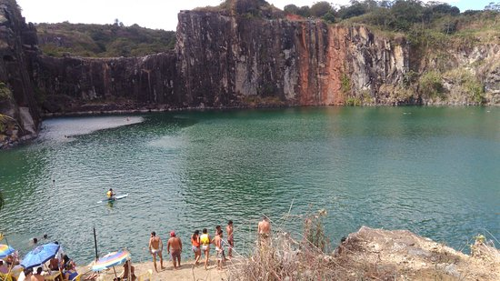
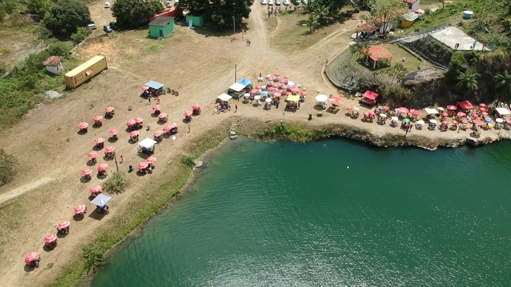

-------------------------------------------
Jaboatão dos Guararapes - Pontos Turísticos
Lagoa Azul
Formado a partir de uma antiga pedreira, há mais de 30 anos, o local surgiu após uma perfuração que atingiu um lençol freático. A água fluiu e ocupou toda a cratera, formando o paraíso.
O cenário fica no Engenho Guarany, próxima a comunidade de Vila Piedade, bairro de Socorro, em Jaboatão dos Guararapes. Para não se perder, o ideal é procurar no mapa ou em aplicativos como o waze para achar a localização exata.
É um local extremamente bonito e com uma vegetação praticamente intocada, com uma lagoa com 12 m de profundidade. Termina sendo uma ótima opção para práticas de esportes radicais como rapel e tirolesa, além de garantir fotos incríveis. Quem é adepto da natureza bruta é também um ótimo espaço para curtir a paz do lugar.
O paredão da lagoa tem seus 50 metros de altura posicionados em um ângulo de 90 graus. Por conta disto, o melhor é priorizar sempre a segurança durante a visitação e prática de atividades. Ou seja, busque sempre apoio de profissionais e empresas respaldados para atuação na região.
A primeira e mais importante medida de segurança, os suprimentos, pode ser garantida por você mesmo. Ou seja, quando for, leve comida e bebida suficiente para o tempo estimado do passeio. O lugar é isolado, ou seja, não encontrará lugar para compras estes itens, portanto garanta ter com você o suficiente.
A Lagoa é um espaço onde se pode fugir um tanto do ritmo intenso dos centros urbanos e se conectar com a natureza. No entorno se pode ver matas, lagoas profundas, paredões rochosos, vales e muito mais. O barulho, a poluição e o estresse podem ser esquecidos para quem decide visitar o lugar.
É possível experimentar a serenidade de mergulhos, a tranquilidade das trilhas ecológicas e também a adrenalina da prática de esportes. O espaço está aberto todos os finais de semana, das 8h às 18h.